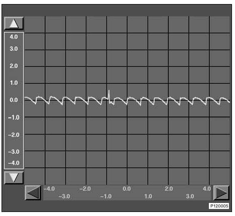
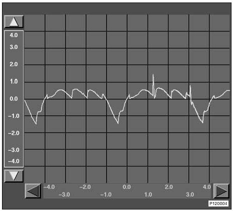
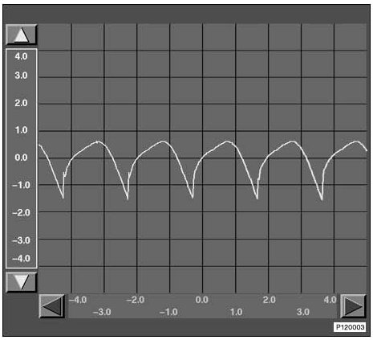

Oscilloscope Target Image, Alternator
Oscilloscope Target Image, Alternator
The following illustration represents the voltage progression of an intact generator. The level of the individual waves depends on the current load of the generator. The length of the waves depends on the engine speed. The higher the engine speed the shorter the waves.
At idle speed with consumer units switched on, an error-free generator should provide approximately this picture.
Waveform:

Examples of faulty generators are shown below.
The current as a function of engine speed also applies here.
Waveform:

Generator with defective diode
Waveform:

Generator with broken winding